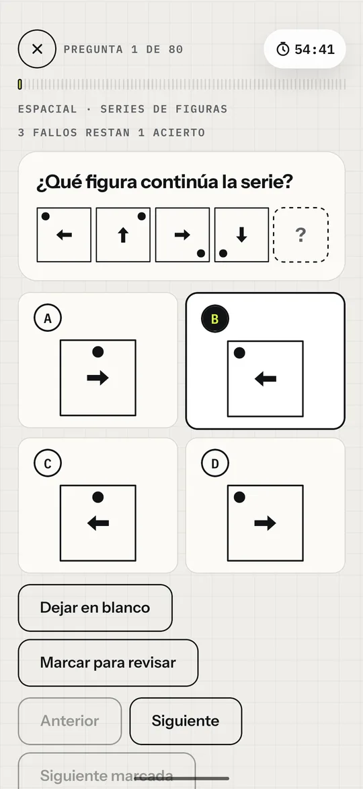
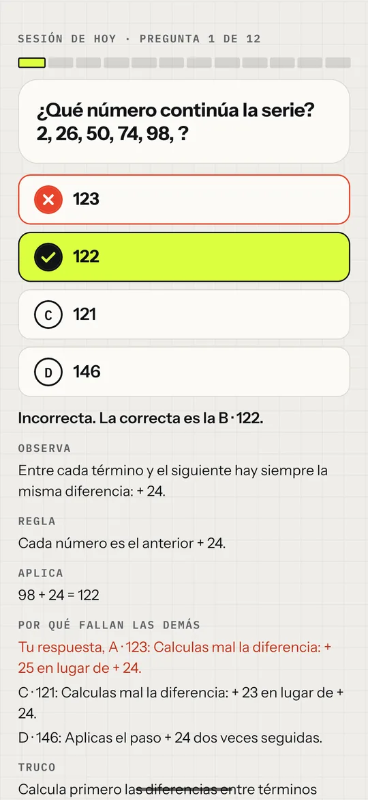
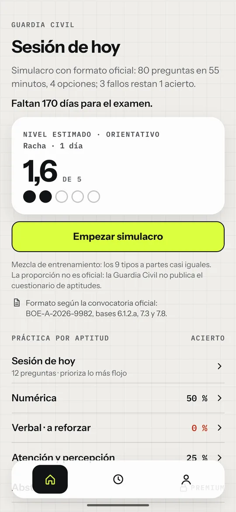

Entrena los psicotécnicos de la Guardia Civil con el formato del examen.
Simulacros de 80 preguntas en 55 minutos, puntuados con la fórmula de las bases. Y cada pregunta, explicada paso a paso.
Formato según la convocatoria oficial: BOE-A-2026-9982, bases 6.1.2.a, 7.3 y 7.8. Aptiq es independiente de la Administración.

El simulacro sigue las reglas de las bases.
Mismo número de preguntas, mismo tiempo y misma penalización que el examen. El cronómetro no se detiene aunque cierres la app.
22,75 / 30
(64 aciertos − 10 fallos ÷ 3) × 30/80 = 22,75
Mínimo de las bases: 12. Las preguntas en blanco no restan.
Cada fallo te enseña el truco.
Al terminar, repasas cada pregunta con su solución razonada.
- Paso a pasoQué observar, qué regla sigue y cómo se aplica.
- Por qué fallasteEl error típico que lleva a cada opción incorrecta.
- El truco de examenUna forma rápida de atacar ese tipo de pregunta.

Practica lo que más te cuesta, cada día.
La Sesión de hoy mezcla los tipos en los que fallas más y ajusta la dificultad a tus aciertos. Cinco aptitudes: numérica, verbal, atención y percepción, abstracta y espacial.
- Sin conexiónPractica y haz simulacros sin red. Con cuenta, se sincroniza al volver.
- Tu nivel por aptitudVes cómo evoluciona cada una y cuál toca reforzar.
- Preguntas originalesGeneradas para cada tipo de ejercicio; ninguna copiada de exámenes.

Empieza gratis. Pasa a Premium cuando lo necesites.
Las explicaciones paso a paso están en los dos planes. La suscripción anual incluye 7 días de prueba y hay pases de 3 y 6 meses sin renovación. Precios en la app.
Para empezar
- 1 Sesión de hoy al día
- 1 simulacro a la semana
- Práctica de Series numéricas, Comparación de datos y Ordenación alfabética
- Repaso de fallos del último simulacro
Hasta el examen
- Simulacros y Sesión de hoy ilimitados
- Todos los tipos y niveles
- Historial completo y repaso espaciado
- Nivel por aptitud y por tipo